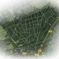
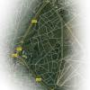
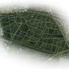
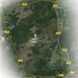

Op deze website kunt u een virtuele rondwandeling maken langs een aantal wandelroutes in de gemeente Ede. Het is mogelijk om zelf uw route te lopen, of u automatisch te laten lopen volgens een paaltjesroute.

In het westelijk deel van het Edese bos zijn twee paaltjesroutes uitgezet van 5,9 km en 5 km. Deze zijn beide gefotografeerd. Totaal zijn in dit bos 2698 foto's te zien.
Ga verder in het Edese bos

In het oostelijk deel van het Edese bos zijn drie paaltjesroutes uitgezet. Alleen de groene route van 4,4 km is gefotografeerd.
Ga verder in het Edese bos (oost)

In de Sysselt is 1 paaltjesroute van 4,8 km uitgezet. Behalve deze route zijn er ook foto's van het gehele hondenlosloopgebied, waardoor het hier het goed mogelijk is om zelf rond te kijken. Totaal zijn in dit bos 2850 foto's te zien.
Ga verder in de Sysselt

Alleen de Plijmen paaltjesroute van 8,5 km is gefotografeerd.
Ga verder in de Hoge Veluwe
Deze website is gemaakt door Joris Wit. Als u vragen heeft, mail dan naar